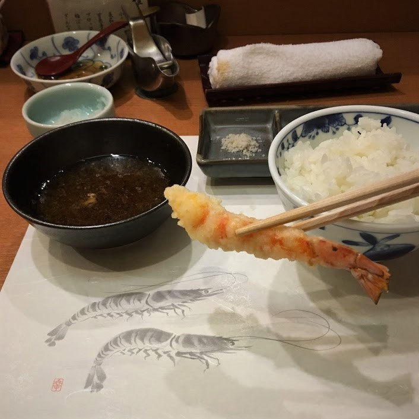

Half Planned, Half Not
Welcome to my travels!
Treks, eats, culture..
Hello! Starting my travel blog with Japan! This was actually a couple years ago. Starting in Tokyo, I was amazed at the thoughtful city planning that combined technology with nature into a unique collection of structures. As a tourist, I found it relatively easy to navigate the subway systems and I believe google maps worked pretty well for the most part. First plan of action was where and what to eat, after walking around City Hall and seeing some promos for the 2020 Olympics(it was 2018). My family and I ventured to Tsukiji Market to see the fish market in action. However, by the time we arrived, the markets had closed for the day as they start their tuna auctions very early :/ at 6am plus there was an old and new market. (Spoiler, they also reloacated around 2019) But where did all the fish go?
Yep, sushi restaurants around the market got first dibs and would be serving them in time for lunch. After walking around an empty market, we got hungry and walked around Tsukiji Outer Market in search of food. I found a sushi spot that was pretty popular plus if they get their fish fresh everyday, it had to show in the taste right? This was actually a spot I had researched before, but the restaurant was already drawing a crowd at 10:30-11am. Tsukiji Yamato Sushi was bustling and we lucky got a seat at the sushi bar. There were many options to order individual pieces of fish/sushi however they were all in Japanese. The sushi chef who was used to tourist recommended the omakase, which consist of the special fish for today. Also means "to entrust", so we trusted the sushi chef. He was funny and wanted to show us how Japanese eat sushi and drink their miso soup. Both of which I thought I was pretty familiar with, but this sushi was special. I looked for the wasabi as I usually mix it with my soy sauce and dip the sushi in. He understood what we said but recommended that we try it how he crafted it first. In addition, there would be no need of soy sauce or wasabi because he blended the perfect amount on the fish already. The omakase went from leaner fish (tuna, salmon, shrimp) to fattier ones (uni, fatty salmon, and albacore), with ginger to cleanse the palette in-between. Would definitely recommend you to trust the sushi chef to recommend to you in Tsukiji!
Talk about tempuradfdfdfdfddfdf fdsjkkkkkkkkkkkkkkkkk dfskhhhhhhhhhhhhhhhhhhhhh hhhhhhhhhhhhhhhhhhhh sfdhkkkkkkkkkkkkkkdfd
Talk about fishies